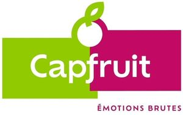

Trade Mark Journal No.2025/026 27 June 2025
WO0000001858806 (29,30)
Office of origin: France
Date of International Registration:13 November 2024
Date of designation in the UK:
13 November 2024

International priority date claimed: 14 May 2024
(France)
(5054236)
- Class 29
- Fruit purees, fruit pulps, fruit pastes, cut fruits, deep-frozen fruits, semi-candied fruits; dried fruits, including walnut kernels and almonds, oil seeds and peanuts; jellies for food, gelling agents; fruit fillings, fat and cream for preparing pastries and ice creams; fruit preparations in liquid, paste or powder form; jams; fruit spreads, fruit desserts.
- Class 30
- Edible ices, sorbets (edible ices), frosted fruits (edible ices); fillings for pastry and edible ices, namely, poppy seed fillings, fruit fillings, marzipan blocks, raw marzipan blocks, macaroon pastes, nougat-hazelnut cream, chocolate cream, custard, in powder and paste form, preparations for keeping fresh cream in its original state, flavorings and essences in liquid, paste and powder form for food products; baking, stuffing, filling, coating and icing mixes for pastry and confectionery; uncooked mixtures, namely nougat, almond and marzipan pastes; truffles, cocoa and chocolate mixtures; desserts, namely puddings, jelly-based desserts (confectionery), fruit jellies (confectionery), sweet and savory sauces for preparation of liquids in paste or powder form for making sweet and savory sauces, fruit coulis.
CAP'FRUIT
Representative: Madame URMAN Charlotte MIIP - MADE IN IP, 42 Boulevard Carnot, F-06400 CANNES, FRANCE